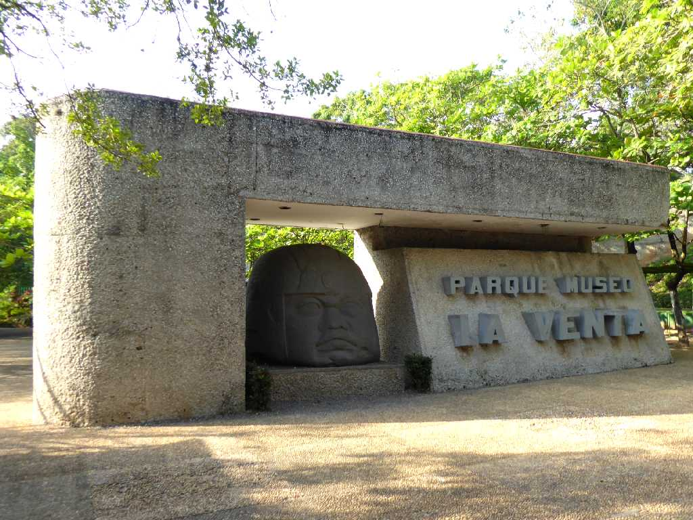
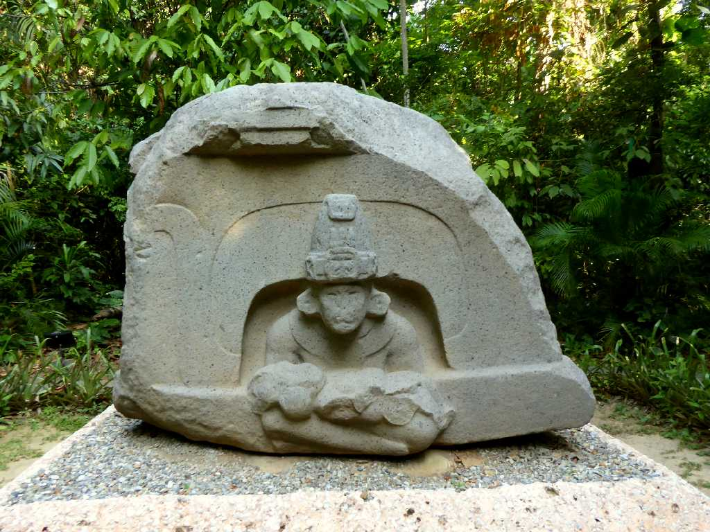
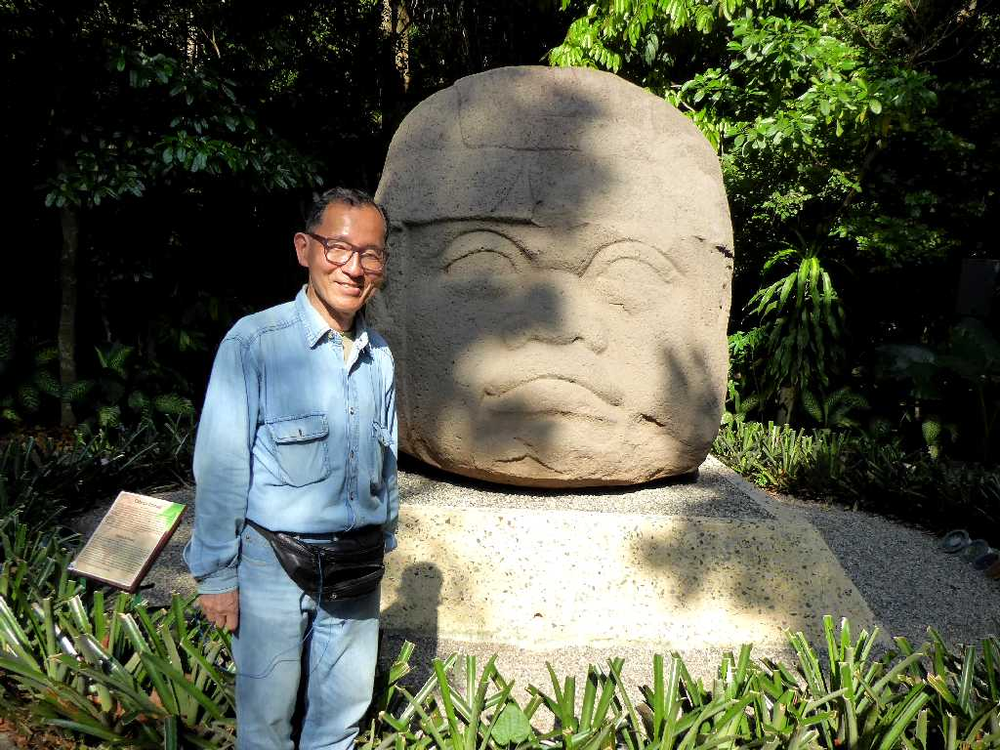
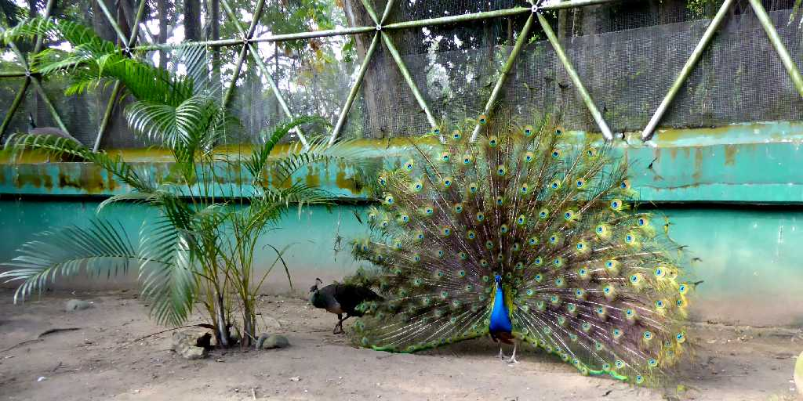
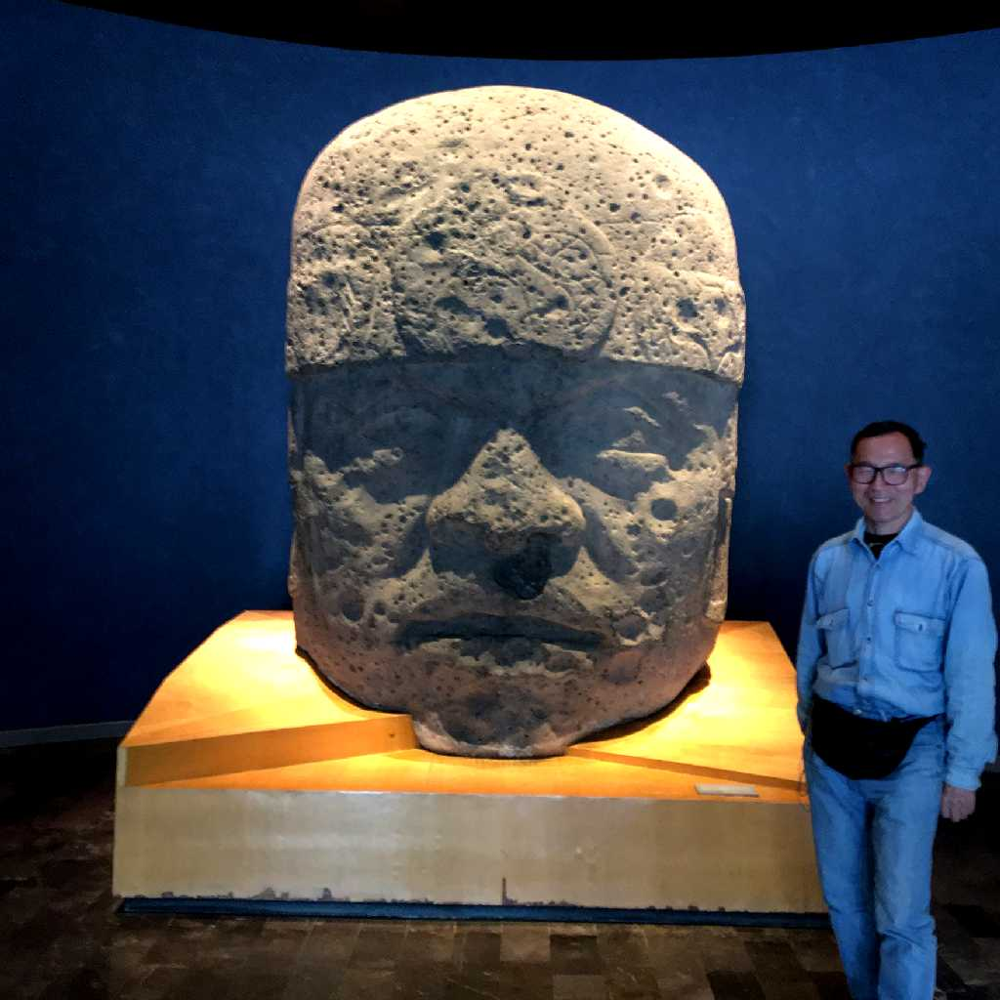

Parque Museo La Venta Villahermosa
オルメカ文明の巨石人頭像などが展示されているラベンダ遺跡公園

Alatar a la Madre Altar Parque Museo La Venta
母を讃える祭壇

March 17 2020 Parque Museo La Venta

Pavo real Parque Museo La Venta
遺跡公園ないの孔雀が羽を広げて歓迎

March 10 2020 Cabeza Olmeca Museo Nacional de Antropología